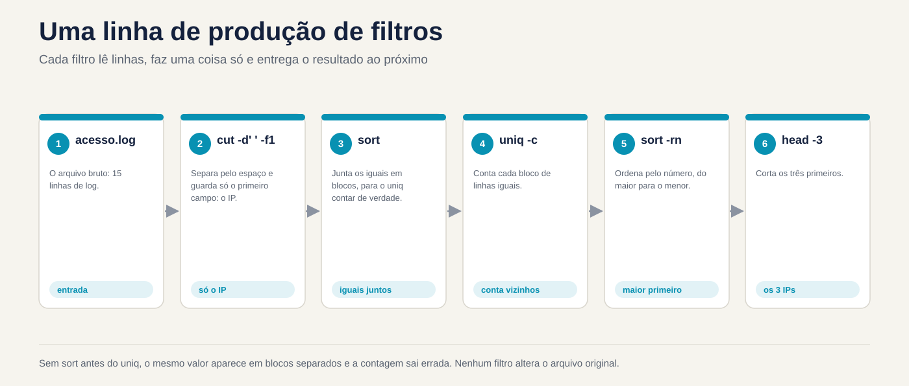
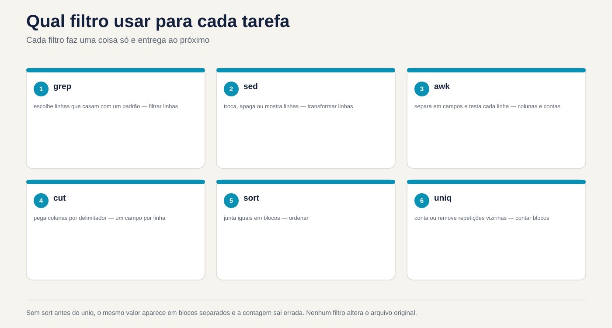

Lezione 3.2 · Filtri di testo
Nella lezione 3.1 hai imparato come collegare i comandi: chi legge da dove, chi scrive dove e come effettivamente una pipe si guasta. Oggi impari cosa mettere nel mezzo del tubo. Un server parla in testo: log, /etc/passwd, l'output di ps, ss, du. La domanda sul ticket non è quasi mai "mostra il registro". Si tratta di "chi ha sbagliato più password", "quale cartella ha riempito il disco", "quanti 500 errori dalle otto in punto". La risposta è una fila di filtri: cut taglia colonne, sort ordina, uniq conta, tr scambia e cancella caratteri, paste unisce, nl numeri, split divide, od mostra i byte che non vedi e sha256sum dimostra che due file sono uguali. Alla fine della lezione, un log diventa un report con uno script di dieci righe, lo stesso su entrambe le VM.
| File | lezione 3.2 |
|---|---|
| Modulo | M3 · Testo ed editor, lezione 2 di 5 |
| Quando | Settimana 7 |
| Alla fine puoi | Taglia colonne con cut, comprese le uscite con più spazi; ordinare per numero, per dimensione leggibile e per colonna specifica con sort -t -k; contare le occorrenze con sort | uniq -c | sort -rn; pulire e cambiare i caratteri con tr e sapere quando non è più utile; unire righe e colonne con paste; numero con nl; dividere e riassemblare i file con split e cat e dimostrare l'integrità con sha256sum; trovare un Windows \r con od; leggere i registri ruotati con zcat; trasformare un registro in un report |
| Articoli di prova | LE 3.2 (cercare ed estrarre dati da file) · LPIC-1 103.2 (elaborare flussi di testo utilizzando filtri: cut, sort, uniq, tr, paste, nl, split, od, wc, head, tail, zcat, md5sum, sha256sum) · RHCSA (indiretto: estrazione e consegna risultati da archiviare) |
| Prerequisiti | lezione 1.5 (head, tail, wc, grep base); lezione 3.1 (tubi, qui-doc, pipefail, ssh deb) |
| Tempo | Intorno alle 2:30 |
| Istantanee | m3a2-start e m3a2-end in entrambe le VM |
1 · Riscaldamento
Tre domande, appena mi vengono in mente. Scrivi le risposte; la chiave di risposta controlla alla fine.
- Un file contiene le righe
b,a,b,a, in questo ordine. Indovina: quante righe mancano dopouniq? - Hai un elenco di taglie:
512M,1.2G,40K. Indovina:sort -nmette1.2Galla fine? - Un collega invia uno script creato nel Blocco note. Giri e ricevi
/bin/bash^M: bad interpreter. Indovina: cos'è questo^M?
2 · Perché è importante
I filtri sembrano una cosa di prova fino alla prima alba di un incidente:
| Il cosiddetto | La risposta sbagliata | Cosa provoca |
|---|---|---|
| "Chi sta attaccando l'accesso al sito web?" | Aprire il registro in less e scorrere | Venti minuti per scoprire cosa mostra un sort | uniq -c | sort -rn | head in un secondo. Nel frattempo l'attacco continua |
| "Quale cartella ha riempito il disco?" | du -sh * | sort -rn | head -1 | Mostra 512M come il più grande e 3.5G viene tralasciato. Qualcuno ha eliminato la cartella sbagliata |
| "Conta quanti IP diversi hanno avuto accesso oggi" | cut ... | uniq | wc -l | uniq unisce solo le linee vicine. Il numero esce gonfiato e il rapporto arriva al cliente in questo modo |
| "Il foglio di calcolo dell'utente proviene da Windows, crea gli account" | Leggi il CSV direttamente in un loop | Ogni nome termina con un \r invisibile: useradd crea ana\r e nessuno può entrare come ana |
| "Il file da 2 GB è arrivato corrotto al fornitore" | Invia ancora e ancora | Senza sha256sum su entrambi i lati, nessuno sa se il problema è l'upload, il disco o il file sorgente |
| "Abbiamo bisogno dei registri della scorsa settimana" | grep in /var/log/messages | I giorni precedenti vengono ruotati, a volte in .gz. grep non si legge compresso; zgrep e zcat leggere |
Chi risolve velocemente non conosce più i comandi. Sai come assemblare la riga giusta: taglia, ordina, conta, in quest'ordine.
3 · Modello mentale
Un filtro è un comando che legge le righe nell'input, fa una cosa con esse e scrive le righe nell'output. Nessun filtro modifica il file originale. Assembli il report come una linea di produzione: ogni filtro riceve ciò che ha consegnato il precedente e il successivo vede solo ciò che rimane.
A pergunta: "quais IPs mais acessaram?"
acesso.log ─▶ cut -d' ' -f1 ─▶ sort ─▶ uniq -c ─▶ sort -rn ─▶ head -3
(15 linhas) (só o IP) (iguais (conta os (maior (os 3
ficam vizinhos) número primeiros)
juntos) primeiro)
O que passa em cada etapa:
10.1.0.20 10.1.0.20 10.1.0.20 4 10.1.0.20 5 192.168.5.7
10.1.0.31 10.1.0.20 10.1.0.20 2 10.1.0.31 4 10.1.0.20
10.1.0.20 ─▶ 10.1.0.20 ─▶ ... ─▶ 1 10.1.0.45 ─▶ 3 203.0.113.9
192.168.5.7 10.1.0.20 10.1.0.31 5 192.168.5.7 2 10.1.0.31
... 10.1.0.31 ... 3 203.0.113.9 1 10.1.0.45
Por que o sort vem ANTES do uniq:
sem sort: a b b a ─▶ uniq -c ─▶ 1 a 2 b 1 a (o "a" aparece duas vezes)
com sort: a a b b ─▶ uniq -c ─▶ 2 a 2 b (agora conta de verdade)Tre domande per ciascun filtro, prima di utilizzarlo: cos'è una colonna (un separatore fisso? qualche spazio?), cosa è uguale ad esso (byte per byte? secondo la lingua?), e cos'è un carattere (un byte? una lettera con un accento?). Quasi tutti i risultati errati nella lezione provengono da una di queste tre risposte.


4 · Concetto a più livelli
Essenziale
Il file di laboratorio. Tutti gli esempi utilizzano lo stesso registro di accesso da un server Web, creato nel passaggio 0. Una riga, con ciascun campo separato da uno spazio:
192.168.5.7 - - [03/Nov/2026:08:02:30 +0100] "POST /login HTTP/1.1" 401 128
1 2 3 4 5 6 7 8 9 10Campo 1 è l'IP, 7 è il percorso richiesto, 9 è lo stato HTTP e 10 è la dimensione della risposta in byte.
Il cut taglia. Per campo, con un separatore di un carattere, o per posizione:
cut -d' ' -f1 acesso.log # solo l'IP
cut -d' ' -f7,9 acesso.log # il percorso e lo stato
cut -d: -f1,3 /etc/passwd # nome e UID
cut -c1-3 acesso.log # i primi tre caratteri di ogni riga
cut -d: -f1 --complement /etc/passwd # tutto tranne il campo 1 (GNU)Sem -d, il separatore è la tabulazione. -f accetta elenchi (1,3) e brani (2-4, 5-).
sort ordina. Per impostazione predefinita, per testo, secondo la lingua del sistema:
| Opzione | Cosa fa | Esempio |
|---|---|---|
-n | Per numero | sort -n numeros.txt |
-r | Inverti | sort -rn (prima il più grande) |
-h | Per dimensione leggibile: K, M, G | du -sh * | sort -h |
-u | Solo uno per ogni riga è uguale a | sort -u nomes.txt |
-t X | Il separatore di campo è X | sort -t: |
-k N,N | Ordina per campo N, solo | sort -t: -k3,3n /etc/passwd |
-o f | Scrive in f, anche se è il file di input | sort -o lista.txt lista.txt |
uniq unisce le linee uguali vicine. E solo vicine: per questo motivo viene quasi sempre dopo sort.
| Opzione | Che cosa significa |
|---|---|
| (nessuno) | Uno per ogni gruppo di linee uguali di fila |
-c | Contare quanti erano in ciascun gruppo |
-d | Solo quelli che si ripetono |
-u | Solo quelli che compaiono una volta |
La frase che scriverai per tutta la vita: sort | uniq -c | sort -rn | head. Taglia prima, con cut, e lei risponde "quello che appare di più".
** wc, head e tail rivisti.** wc -l conta le righe; head -n 3 e tail -n 3 prendono il primo e l'ultimo. Un nuovo dettaglio: tail -n +2 inizia alla riga 2, cioè salta l'intestazione di un CSV.
tr scambia caratteri. Legge solo l'input: non accetta nomi di file.
tr a-z A-Z < arquivo # minuscolo in maiuscolo
tr -d '\r' < win.txt > unix.txt # elimina \r da Windows
tr -s ' ' < saida.txt # unisce gli spazi ripetuti in uno solo
tr ':' '\n' <<< "$PATH" # una directory PATH per rigaIntermedio
cut e i vari spazi. cut -d' ' considera ogni spazio un separatore. Due colonne separate da tre spazi hanno, per lui, due campi vuoti al centro. L'output di ps, ls -l, df e /var/log/secure di Rocky allinea le colonne con spazi ripetuti. La soluzione è unire gli spazi prima di:
ps aux | cut -d' ' -f2 # quasi tutto vuoto
ps aux | tr -s ' ' | cut -d' ' -f2 # il PID di ciascun processoIl registro rsyslog ha una trappola del calendario: il giorno è allineato con uno spazio, Nov 3 nei giorni da 1 a 9 e Nov 10 dal 10. Un cut -d' ' -f5 che funziona il 12 ottiene il campo sbagliato il 3. tr -s ' ' lo risolve in entrambi i casi.
O sort per colonna. L'infinito -k (-k3) ordina dal campo 3 alla fine della riga; -k3,3 ordina solo tramite il campo 3. Il tipo va con la chiave:
sort -t: -k3,3n /etc/passwd # tramite UID, ad esempio il numero
sort -k1,1nr -k2,2n relatorio.txt # per campo 1, prima il più grande; pareggio, sul campo 2Senza -n, 1000 viene prima di 2, perché il carattere 1 viene prima di 2. Ordinare i numeri come testo è l'errore più comune in sort.
La lingua cambia l'ordine. sort confronta in base alla variabile LC_COLLATE (o LANG). Nel sistema en_US.UTF-8 le lettere maiuscole e minuscole sono mescolate (a A b B) e la punteggiatura quasi non conta. Nella lingua C, l'ordine è byte order: tutto maiuscolo prima del minuscolo. Per un risultato che non dipende dal server ed è più veloce in un file di grandi dimensioni:
LC_ALL=C sort arquivoIl paste unisce. Colonne di file diversi, una accanto all'altra, o tutte le righe di un file in uno:
paste nomes.txt uids.txt # riga 1 con riga 1, separati da tabulazioni
paste -d: nomes.txt uids.txt # lo stesso, separato da ":"
cut -d: -f1 /etc/passwd | paste -sd, # tutti gli utenti in una riga, con una virgola
cut -d' ' -f10 acesso.log | paste -sd+ # 512+1024+2048+...: un resoconto prontoL'ultima riga diventa una somma con l'aritmetica del bash: echo $(( $(cut -d' ' -f10 acesso.log | paste -sd+) )).
I numeri nl. Come cat -n, ma per impostazione predefinita salta le righe vuote. nl -ba li numera tutti. Utilizzato per parlare di un file di configurazione: "guarda la riga 42".
I registri ruotati. logrotate rinomina il vecchio registro (messages-20261026) e, a seconda della configurazione, lo compatta (.gz). I filtri non leggono compressi, ma esistono versioni che leggono:
| Da leggere | Compresso con | Utilizzare |
|---|---|---|
.gz | gzip | zcat, zless, zgrep |
.bz2 | bzip2 | bzcat |
.xz | xz | xzcat |
zcat /var/log/messages-*.gz | grep -c sshdWindows Bridge
| Su Windows | Su Linux | La differenza che conta |
|---|---|---|
| Apri il CSV in Excel e filtra | cut, sort, uniq | Su Linux, il filtro viene eseguito sul server, senza copiare il file, e diventa uno script |
Sort-Object | sort | PowerShell ordina gli oggetti in base alla proprietà; sort ordina testo, e tu dici quale colonna e se è un numero |
Group-Object | sort | uniq -c | uniq unisce solo i vicini: sort prima è obbligatorio |
Select-Object -First 5 | head -n 5 | Idem |
Get-FileHash | sha256sum | Lo stesso SHA-256. L'hash di un file è lo stesso su Windows e Linux, se i byte sono gli stessi |
Fine riga CRLF (\r\n) | Fine riga LF (\n) | \r rimane in Linux, invisibile, alla fine di ogni riga. È l'origine della metà del messaggio "lo script non funziona" |
| Il blocco note mostra gli accenti | od -c mostra i byte | In Linux vedi cosa c'è nel file, incluso cosa nasconde lo schermo |
Avanzato
tr non capisce l'accento. tr di GNU funziona con byte. In UTF-8, ç e ã sono due byte ciascuno e nessuno dei due è in a-z. Pertanto tr a-z A-Z <<< "ação" restituisce AçãO. Per cambiare maiuscole e minuscole nel testo accentato, in una lingua UTF-8:
palavra="ação"; echo "${palavra^^}" # AZIONE, in bash
sed 's/.*/\U&/' <<< "ação" # AZIONE, in GNU sedod mostra l'invisibile. od -c stampa ogni byte come carattere; -An rimuove la colonna dalla posizione; -tx1 viene visualizzato in esadecimale. Ecco come scopri \r in Windows, una tabulazione al posto degli spazi, o uno strano carattere incollato da una pagina web:
printf 'ok\r\n' | od -c
# 0000000 o k \r \n
printf 'ação' | od -An -tx1
# 61 c3 a7 c3 a3 6fIl cat -A fa la stessa cosa, in modo più breve: mostra ^M per il \r, ^I per la tabulazione e $ alla fine di ogni riga.
Il split divide; cat torna indietro. Per inviare un file di grandi dimensioni su un canale che ha un limite di dimensione o per elaborare un registro enorme in blocchi:
split -b 10M -d backup.tar.gz backup.part. # backup.parte.00, .01, .02...
split -l 1000 lista.txt lista. # 1000 righe per pezzo: list.aa, list.ab...
cat backup.part.* > backup-remontado.tar.gz-d utilizza numeri nel suffisso. cat backup.part.* si riassembla nell'ordine corretto perché la shell espande * in ordine alfabetico e 00 viene prima di 01.
L'hash dimostra. sha256sum calcola un'impronta digitale di 64 caratteri esadecimali. Un byte diverso modifica l'intero hash. -c controlla un elenco di hash precedentemente registrato:
sha256sum backup.tar.gz > backup.sha256 # scrive "nome hash"
sha256sum -c backup.sha256 # backup.tar.gz: OKmd5sum e sha1sum funzionano allo stesso modo, ma sono interrotti per sicurezza: qualcuno può creare due file diversi con lo stesso hash. Servono ancora per rilevare la corruzione accidentale; per dimostrare che nessuno ha toccato il file, utilizzare sha256sum o sha512sum. Questo è ciò che pubblicano le distribuzioni accanto a ciascuna ISO.
Il join, da sapere. Il join unisce due file ordinati per colonna comune, come un database JOIN: join -t: <(sort -t: -k1,1 a) <(sort -t: -k1,1 b). Raramente rientra nel test e quasi mai su base giornaliera, perché awk della lezione 3.4 fa lo stesso con maggiore controllo.
Cosa rientra nel test
Linux Essentials e LPIC-1 (103.2):
- Cosa fa ciascun filtro, in una frase, e l'opzione principale di ciascuno:
cut -d -f,sort -n -r -k -t -u,uniq -c -d -u,tr -d -s,paste -s -d,nl -ba,split -l -b,od -c,wc -l -w -c. - Quel
uniqnecessita di input ordinato. - Quel
trlegge solo l'input standard. head -netail -n, inclusitail -n +Netail -f.zcat,bzcatexzcatleggere compressi senza decompressione.md5sum,sha256sumesha512sum, e il-c.
RHCSA:
- Non c'è dubbio "usa
cut", ma c'è "salva in/root/xle righe che...", "salva l'elenco ordinato di...". I filtri sono il modo in cui assembli la risposta e la consegni in un file, con>dalla lezione 3.1.
5 · Rocky × Debian
| Cosa | laboratorio-roccioso | debian-lab | Come controllare |
|---|---|---|---|
cut, sort, uniq, tr, paste, nl, split, od, sha256sum | Coreutil GNU 8.32 | Coreutil GNU 9.1 | sort --version | head -1 |
sort lingua predefinita | Quale impostazione è impostata | Quale impostazione è impostata | locale; se le due VM differiscono, differisce anche l'ordine di sort |
awk | gawk | mawk | readlink -f "$(command -v awk)". Materie della lezione 3.4 |
Formato di /var/log/secure e /var/log/messages | rsyslog, formato tradizionale: Nov 3 08:02:30, con il giorno allineato per spazio | Non esistono: solo il giornale | sudo head -n 2 /var/log/secure |
| Formato diario breve | Nov 03 08:02:30, con zero | Nov 03 08:02:30, con zero | journalctl -n 2 |
| Registri ruotati | Con data nel nome (messages-20261026) | Con numero (.1, .2.gz) | ls /var/log/ | head |
dos2unix | Non viene installato | Non viene installato | command -v dos2unix |
bc (calcolatrice) | Potrebbe non essere installato | Potrebbe non essere installato | command -v bc. La lezione usa $(( )), che viene da bash |
La differenza più fuorviante è quella del log: la stessa domanda, con lo stesso cut, dà il risultato giusto un giorno e quello sbagliato quello dopo, in Rocky. In Debian il formato journal non presenta questo problema, ma il log non è nemmeno un file. Il passo 4 mostra entrambi i casi.
6 · Laboratorio guidato
Sei rodrigo, in rocky-lab e raggiungi debian-lab tramite ssh deb. Tutto avviene in ~/lab32, su entrambe le VM; Nessun passaggio tocca il file di sistema e i registri effettivi vengono solo letti. Il passaggio 7 è la sfida della lezione e il report che genera deve essere controllato dopo il riavvio.


Passaggio 0 · Istantanea, percorso e registro del laboratorio
In Proxmox, acquisire l'istantanea m3a2-inicio delle due VM. In rocky-lab:
eval "$(ssh-agent -s)"; ssh-add
ssh -o BatchMode=yes deb hostname
mkdir -p ~/lab32; ssh deb 'mkdir -p ~/lab32'
cd ~/lab32
locale | grep -E '^(LANG|LC_COLLATE)='; ssh deb "locale | grep -E '^(LANG|LC_COLLATE)='"Nota la lingua delle due VM: se sono diverse, sort potrebbe anche essere ordinato in modo diverso. Ora il registro del laboratorio, con un qui-doc tra virgolette, così la shell non cambia nulla:
cat > acesso.log <<'EOF'
10.1.0.20 - - [03/Nov/2026:08:00:01 +0100] "GET / HTTP/1.1" 200 5120
10.1.0.31 - - [03/Nov/2026:08:00:15 +0100] "GET /docs HTTP/1.1" 200 2048
10.1.0.20 - - [03/Nov/2026:08:01:02 +0100] "GET /docs HTTP/1.1" 200 2048
192.168.5.7 - - [03/Nov/2026:08:02:30 +0100] "POST /login HTTP/1.1" 401 128
192.168.5.7 - - [03/Nov/2026:08:02:31 +0100] "POST /login HTTP/1.1" 401 128
203.0.113.9 - - [03/Nov/2026:08:03:10 +0100] "GET /admin HTTP/1.1" 403 256
192.168.5.7 - - [03/Nov/2026:08:03:12 +0100] "POST /login HTTP/1.1" 401 128
10.1.0.45 - - [03/Nov/2026:08:04:00 +0100] "GET /relatorio.pdf HTTP/1.1" 200 1048576
203.0.113.9 - - [03/Nov/2026:08:04:20 +0100] "GET /wp-login.php HTTP/1.1" 404 512
10.1.0.20 - - [03/Nov/2026:08:05:05 +0100] "GET /api/status HTTP/1.1" 500 64
192.168.5.7 - - [03/Nov/2026:08:05:40 +0100] "POST /login HTTP/1.1" 401 128
10.1.0.31 - - [03/Nov/2026:08:06:00 +0100] "GET /api/status HTTP/1.1" 500 64
203.0.113.9 - - [03/Nov/2026:08:06:30 +0100] "GET /.env HTTP/1.1" 404 512
192.168.5.7 - - [03/Nov/2026:08:07:01 +0100] "POST /login HTTP/1.1" 200 4096
10.1.0.20 - - [03/Nov/2026:08:07:30 +0100] "GET / HTTP/1.1" 200 5120
EOF
wc -l acesso.log15 acesso.logLeggi il file una volta, con calma. Un IP che prova più volte /login e riceve 401, un altro che cerca /wp-login.php e /.env su un sito che non è nemmeno WordPress: è esattamente quello che vedi su un server esposto su internet.
Passo 1 · Il uniq che non conta
Il capo chiede: "a quanti IP diversi hanno avuto accesso?". Innanzitutto, solo l'IP di ciascuna riga:
cut -d' ' -f1 acesso.logQuindici righe, un IP per riga. Adesso il tentativo veloce:
Decidi 1 · Esegui cut -d' ' -f1 acesso.log | uniq | wc -l. Che numero esce?
- A) 5
- B) 14
- C) 15
- D) 1
Scegli la lettera prima di guardare la tabella.
cut -d' ' -f1 acesso.log | uniq | wc -l
cut -d' ' -f1 acesso.log | sort -u | wc -l| Se hai selezionato | Risultato | Perché |
|---|---|---|
| A | ❌ Sbagliato | È la risposta giusta alla domanda, ma non è ciò che fornisce questo comando. Il cinque esce dal secondo comando, con sort -u. |
| B | ✅ Giusto | uniq unisce solo righe vicine identiche. Nel log solo le righe 4 e 5 hanno lo stesso IP una sotto l'altra. Le altre ripetizioni sono sparse e ognuna conta di nuovo. |
| C | ❌ Sbagliato | uniq combinava qualcosa, sì: le due righe seguite da 192.168.5.7. |
| D | ❌ Sbagliato | uniq non riduce tutto ad una riga. Confronta ogni riga solo con quella precedente. |
Da risolvere: uniq senza sort prima è un bug che sembra funzionare. In un registro di test ordinato in modo casuale, fornisce il numero giusto; nel registro di produzione, n. Per contare diversi: sort -u | wc -l. Per contare quante volte appare ciascuna: sort | uniq -c.
Ora la frase di tutta la vita, con il risultato del Modello Mentale:
cut -d' ' -f1 acesso.log | sort | uniq -c | sort -rn | head -n 3 5 192.168.5.7
4 10.1.0.20
3 203.0.113.9Lo stesso scheletro, cambiando colonna, risponde ad un'altra domanda. Il campo 9 è lo stato:
cut -d' ' -f9 acesso.log | sort | uniq -c | sort -rn 6 200
4 401
2 500
2 404
1 403L'ordine tra 500 e 404, che sono pari a 2, può variare: sort -rn guarda solo il numero. Per risolvere la parità in modo fisso, pronuncia la seconda chiave: sort -k1,1nr -k2,2n.
Passo 2 · Numero ordinato come testo
Qual è stata la risposta più grande, in byte? Il campo 10 è la dimensione.
Decidi 2 · Esegui cut -d' ' -f10 acesso.log | sort -r | head -n 1. Cosa appare?
- A)
1048576 - B)
64 - C)
5120 - D) Errore:
sortnon ordina i numeri senza-n
Scegliere la lettera prima di guardare la tabella.
cut -d' ' -f10 acesso.log | sort -r | head -n 1
cut -d' ' -f10 acesso.log | sort -rn | head -n 1| Se hai selezionato | Risultato | Perché |
|---|---|---|
| A | ❌ Sbagliato | Questo è il risultato del secondo comando, con -n. |
| B | ✅ Giusto | Senza -n, sort confronta carattere per carattere, come in un dizionario. 6 di 64 viene dopo 5 di 5120 e 1 di 1048576, quindi, da dietro in avanti, 64 viene prima. |
| C | ❌ Sbagliato | 5120 perde rispetto a 64 nel primo carattere: 5 precede 6. |
| D | ❌ Sbagliato | sort ordina qualsiasi testo. Non ti avvisa che hai dimenticato -n; consegna semplicemente l'ordine sbagliato. |
Da correggere: colonna numerica, sort -n, sempre. E l'errore non avvisa: un report con l'ordine sbagliato sembra un report normale.
Stesso problema, con dimensioni leggibili. Leggi: quale cartella /var/log occupa più spazio?
sudo du -sh /var/log/* 2>/dev/null | sort -rn | head -n 3
sudo du -sh /var/log/* 2>/dev/null | sort -rh | head -n 3-n legge solo il numero e ignora la lettera: 900K batte 12M. -h comprende K, M e G. Esegui il secondo su entrambe le VM; è la risposta alla chiamata "quale cartella ha riempito il disco".
Passo 3 · La colonna di destra e l'intestazione
HR inviano un foglio di calcolo:
cat > usuarios.csv <<'EOF'
nome;uid;depto
ana;2001;suporte
bruno;2002;redes
carla;150;suporte
davi;10010;redes
EOFSi desidera l'elenco per UID, senza intestazione. tail -n +2 inizia alla riga 2:
Decidi 3 · Esegui tail -n +2 usuarios.csv | sort -t';' -k2 | cut -d';' -f1. In che ordine compaiono i nomi?
- A) carla, ana, bruno, davi
- B) davi, carla, ana, bruno
- C) ana, bruno, carla, davi
- D) bruno, davi, ana, carla
Scegli la lettera prima di guardare tabella.
tail -n +2 usuarios.csv | sort -t';' -k2 | cut -d';' -f1 | paste -sd,
tail -n +2 usuarios.csv | sort -t';' -k2,2n | cut -d';' -f1 | paste -sd,| Se hai selezionato | Risultato | Perché |
|---|---|---|
| A | ❌ Sbagliato | Si tratta dell'ordine in base all'UID come numero, che nella chiave appare solo con n: -k2,2n. |
| B | ✅ Giusto | Senza n l'UID è testo: 10010 sta prima di 150, che sta prima di 2001, perché 1 sta prima di 2, e dopo 1, 0 sta prima di 5. |
| C | ❌ Sbagliato | Sarebbe l'ordine originale del foglio di calcolo. sort ha cambiato l'ordine, ma non come volevi. |
| D | ❌ Sbagliato | Sarebbe l'ordine nel campo 3, il dipartimento, con -k3. -k2 inizia nel campo 2. |
Da correggere: la chiave sort è composta da tre parti e tutte e tre contano: dove inizia (-k2), dove finisce (,2) e come si confronta (n). Scrivere sempre -k2,2n, mai solo -k2.
Due chiavi, per un report per reparto e, al suo interno, per UID:
tail -n +2 usuarios.csv | sort -t';' -k3,3 -k2,2nbruno;2002;redes
davi;10010;redes
carla;150;suporte
ana;2001;suporteLo stesso vale per i file di sistema. I tre utenti con l'UID più alto, su entrambe le VM:
sort -t: -k3,3n /etc/passwd | tail -n 3 | cut -d: -f1,3
ssh deb 'sort -t: -k3,3n /etc/passwd | tail -n 3 | cut -d: -f1,3'In entrambi, l'ultimo è solitamente nobody, con UID 65534. Subito prima arrivano gli utenti del laboratorio, come ana, con 2001. Se appare un altro nome in mezzo, è un account creato da qualche pacchetto: scopri quale con getent passwd nome.
Passo 4 · Il vero log, con troppi spazi
Un campione nel formato rsyslog di Rocky, con una riga dal giorno 3 e un altro del giorno 12:
cat > secure.amostra <<'EOF'
Nov 3 08:02:30 rocky-lab sshd[1201]: Failed password for root from 203.0.113.9 port 51022 ssh2
Nov 12 09:15:02 rocky-lab sshd[1388]: Failed password for root from 198.51.100.4 port 40110 ssh2
EOFContando a occhio, il nome della macchina è la quarta colonna.
Decidi 4 · Esegui cut -d' ' -f4 secure.amostra. Cosa esce?
- A)
rocky-labsu entrambe le righe - B)
08:02:30sulla prima,rocky-labsulla seconda - C) Una riga vuota sulla prima,
rocky-labsulla seconda - D) Errore:
cutnon accetta righe di dimensioni diverse
Scegliere la lettera prima di guardare tabella.
cut -d' ' -f4 secure.amostra
tr -s ' ' < secure.amostra | cut -d' ' -f4| Se hai selezionato | Risultato | Perché |
|---|---|---|
| A | ❌ Sbagliato | È il risultato del secondo comando, dopo tr -s ' '. |
| B | ✅ Giusto | Il giorno 3 ci sono due spazi tra Nov e 3. Per cut tra loro c'è un campo vuoto: Nov, vuoto, 3, 08:02:30. Il campo 4 è l'ora. Il giorno 12, il campo 4 è il nome della macchina. |
| C | ❌ Sbagliato | Il campo vuoto è 2, non 4. |
| D | ❌ Sbagliato | cut elabora ogni riga da sola e non si lamenta mai dei campi: se il campo non esiste, la riga esce vuota. |
Per risolvere: uno script con cut -d' ' nell'output allineato funziona nei giorni da 10 a 31 e si interrompe nei giorni da 1 a 9. Se le colonne sono allineate allo spazio, unisci gli spazi prima: tr -s ' ' | cut -d' '.
Ora i registri effettivi, di sola lettura. In Rocky, il programma che ha scritto le ultime righe di /var/log/secure:
sudo tail -n 20 /var/log/secure | tr -s ' ' | cut -d' ' -f5 | cut -d'[' -f1 | tr -d ':' | sort | uniq -cIn Debian non c'è /var/log/secure. L'equivalente esce dal diario. Il formato breve di journalctl scrive il giorno con due cifre, Nov 03, quindi il campo non balla:
ssh deb "sudo journalctl -n 20 -o short --no-pager | tr -s ' ' | cut -d' ' -f5 | cut -d'[' -f1 | tr -d ':' | sort | uniq -c"Il sudo in ssh deb può richiedere una password. Se richiesto, esegui lo stesso comando all'interno di una sessione ssh deb. La prima riga di journalctl talvolta è un'intestazione (-- Boot ...) o non ha lo stesso numero di campi e appare nel conteggio come un nome strano. Nella Lezione 3.3, grep risolve questo problema scegliendo solo le linee giuste.
E i tronchi ruotavano. A Rocky, i giorni precedenti sono in file con una data nel nome:
ls /var/log/messages* /var/log/secure* 2>/dev/null
sudo cat /var/log/secure-* 2>/dev/null | wc -lSe qualcuno termina in .gz, sostituire cat con zcat. cat di un file compresso mostra spazzatura binaria e wc -l dice spazzatura.
Passo 5 · Il \r che nessuno vede
Il foglio di calcolo HR è arrivato di nuovo, questa volta salvato in Windows. printf imita ciò che registra il Blocco note:
printf 'ana\r\nbruno\r\n' > win.txt
cat win.txtana
brunoSullo schermo tutto è normale.
Decidi 5 · Esegui grep -c '^ana$' win.txt. Che numero esce?
- A)
1 - B)
0 - C)
2 - D) Errore:
grepnon legge il file di Windows
Scegliere la lettera prima di guardare la tabella.
grep -c '^ana$' win.txt
od -c win.txt
cat -A win.txt0
0000000 a n a \r \n b r u n o \r \n
0000014
ana^M$
bruno^M$| Se hai selezionato | Risultato | Perché |
|---|---|---|
| A | ❌ Sbagliato | Il risultato sarebbe in un file Linux. Qui la riga è ana\r: dopo a c'è \r, non la fine della riga. $ non corrisponde. |
| B | ✅ Giusto | od -c mostra \r prima di ogni \n. cat -A mostra lo stesso di ^M. Il terminale si nasconde: \r riporta solo il cursore all'inizio della riga. |
| C | ❌ Sbagliato | bruno non inizia nemmeno con ana. -c conta le righe che corrispondono e nessuna corrispondenza. |
| D | ❌ Sbagliato | Per grep un file è un file. Ha letto tutto; Semplicemente non hai trovato quello che avevi chiesto. |
Per risolvere: quando un testo "uguale" non corrisponde, guardare i byte prima di sospettare il comando: od -c o cat -A. ^M è uguale a bad interpreter di Riscaldamento.
La correzione e la prova:
tr -d '\r' < win.txt > unix.txt
grep -c '^ana$' unix.txt
wc -c win.txt unix.txt1
12 win.txt
10 unix.txt
22 totalDue byte in meno: un \r per riga. tr legge solo lo standard input; quindi <. Ora il limite di tr:
tr a-z A-Z <<< "configuração"
p="configuração"; echo "${p^^}"CONFIGURAçãO
CONFIGURAÇÃOtr non ha toccato né ç né ã: ciascuno è di due byte in UTF-8, fuori a-z. ${p^^} di bash comprende le lettere. Controllare i byte con printf 'ç' | od -An -tx1: ne appaiono due, c3 a7.
Passo 6 · Dividere, unire e provare
Il log arriva a un fornitore attraverso un canale che accetta solo file di piccole dimensioni. Prima di tutto l'impronta digitale:
sha256sum acesso.log | tee acesso.sha256Decidi 6 · Esegui split -l 4 acesso.log parte.. Quanti file vengono visualizzati e di quante righe è l'ultimo?
- A) 3 fascicoli; l'ultimo con 3 righe
- B) 4 file; l'ultimo di 3 righe
- C) 4 file di 4 righe ciascuno; l'ultimo completato con righe vuote
- D) 5 file; l'ultimo con 1 riga
Scegli la lettera prima di guardare la tabella.
split -l 4 acesso.log parte.
wc -l parte.* 4 parte.aa
4 parte.ab
4 parte.ac
3 parte.ad
15 total| Se hai selezionato | Risultato | Perché |
|---|---|---|
| A | ❌ Sbagliato | Tre file di 4 righe ne contengono 12. Ne rimangono 3, che vanno in un quarto file. |
| B | ✅ Giusto | 15 righe, 4 per file: aa, ab e ac con 4, e ad con le restanti 3. |
| C | ❌ Sbagliato | split non inventa mai contenuti. Se venisse inventato, il file riassemblato sarebbe diverso dall’originale e l’hash fallirebbe. |
| D | ❌ Sbagliato | Sarebbe con -l 3 e un registro di 13 righe. Fai i conti: 4 × 3 = 12 e 15 − 12 = 3. |
Per risolvere: split taglia e cat incolla, senza modificare alcun byte. Ciò che dimostra che nessun byte è cambiato è l'hash, mai la dimensione o l'occhio.
Riassemblaggio e prova:
cat parte.* > remontado.log
sha256sum acesso.log remontado.log
cmp acesso.log remontado.log && echo "iguais"
rm parte.* remontado.logI due hash sono uguali e cmp, che confronta byte con byte, non stampa nulla e restituisce successo. Adesso invialo per davvero, all'altra VM, con la prova dall'altra parte:
scp acesso.log acesso.sha256 deb:lab32/
ssh deb 'cd ~/lab32 && sha256sum -c acesso.sha256'acesso.log: OKÈ la stessa cosa che fai con un ISO scaricato: il sito pubblica .sha256 e sha256sum -c lo controlla.
Infine, paste e nl, che sono inclusi nel report del passo 7:
cut -d' ' -f10 acesso.log | paste -sd+
echo $(( $(cut -d' ' -f10 acesso.log | paste -sd+) ))
cut -d' ' -f7 acesso.log | sort -u | nlIl primo comando scrive l'account (5120+2048+...); il secondo calcola: 1068928 byte. Il terzo numera i diversi percorsi richiesti. Per modificare riga per riga, paste unisce due colonne di file diversi:
cut -d' ' -f1 acesso.log > ips.txt
cut -d' ' -f9 acesso.log > status.txt
paste -d' ' ips.txt status.txt | head -n 3Passo 7 · Sfida: il registro diventa un report
La chiamata: "invia un riepilogo del registro degli accessi ogni giorno". Scrivi ~/lab32/relatorio.sh in rocky-lab:
cat > relatorio.sh <<'EOF'
#!/bin/bash
# relatorio.sh: resumo de um log de acesso no formato do lab
set -u
log=${1:?uso: relatorio.sh arquivo.log}
[ -r "$log" ] || { echo "não consigo ler $log" >&2; exit 1; }
echo "Relatório de $log em $(hostname), $(date '+%F %T')"
echo "Requisições: $(wc -l < "$log")"
echo "IPs diferentes: $(cut -d' ' -f1 "$log" | sort -u | wc -l)"
echo "Top 3 IPs:"
cut -d' ' -f1 "$log" | sort | uniq -c | sort -k1,1nr -k2,2 | head -n 3
echo "Por status:"
cut -d' ' -f9 "$log" | sort | uniq -c | sort -k2,2n
echo "Bytes enviados: $(( $(cut -d' ' -f10 "$log" | paste -sd+) ))"
echo "IPs com 401: $(cut -d' ' -f1,9 "$log" | grep ' 401$' | cut -d' ' -f1 | sort -u | paste -sd,)"
EOF
chmod +x relatorio.sh
./relatorio.sh acesso.log | tee "relatorio-$(hostname).txt"Relatório de acesso.log em rocky-lab, 2026-11-...
Requisições: 15
IPs diferentes: 5
Top 3 IPs:
5 192.168.5.7
4 10.1.0.20
3 203.0.113.9
Por status:
6 200
4 401
1 403
2 404
2 500
Bytes enviados: 1068928
IPs com 401: 192.168.5.7Senza pipefail apposta: head chiude il tubo dopo tre righe, e in un grande log il sort prima di ricevere un SIGPIPE. Con pipefail, questa conclusione normale conterebbe come fallimento.
Ora Debian. relatorio.sh va con esso, e in Debian lo chiami sh, senza pensare:
scp relatorio.sh deb:lab32/Decidi 7 · In debian-lab, dove sh è dash, esegui sh relatorio.sh acesso.log. Cosa succede?
- A) Il report esce uguale a quello di Rocky, solo con un nome macchina diverso
- B) Errore in
$(( )):dashnon conta - C) Errore in
${1:?...}:dashnon conosce questo modulo - D)
dashlegge#!/bin/bashe chiamabashsolo
Scegli la lettera prima di guardare la tabella.
ssh deb 'cd ~/lab32 && sh relatorio.sh acesso.log | tee "relatorio-$(hostname).txt"'| Se hai selezionato | Risultato | Perché |
|---|---|---|
| A | ✅ Giusto | Tutto nello script è POSIX: $(( )), ${1:?}, [ -r ], $( ). E i filtri sono programmi esterni, gli stessi per entrambe le shell. Il dash funziona senza lamentele. |
| B | ❌ Sbagliato | $(( )) è POSIX e dash tiene conto dei numeri interi. Ciò che non ha sono gli extra del bash, come il solo (( )) o il let. |
| C | ❌ Sbagliato | ${var:?mensagem} è POSIX e funziona in qualsiasi sh. |
| D | ❌ Sbagliato | Quando scrivi sh script, decide sh. #! è valido solo se lo script viene eseguito direttamente, come ./relatorio.sh. Per dash la prima riga è un commento. |
Da correggere: #! si applica a ./script, mai a sh script. Ha funzionato qui perché lo script non utilizza nulla da bash. Con un ${p^^} dal passaggio 5 o un <<<, lo stesso comando si interromperebbe su Debian e funzionerebbe su Rocky.
Confronta i due report, ad eccezione della prima riga, che ha nome e ora della macchina:
diff <(tail -n +2 relatorio-rocky-lab.txt) <(ssh deb 'tail -n +2 ~/lab32/relatorio-debian-lab.txt') && echo "mesmo resultado"mesmo resultadoLo stesso registro, lo stesso script e due sistemi diversi forniscono lo stesso report. Se l'ordine degli IP cambiasse da una VM all'altra, la colpa sarebbe del linguaggio (Passaggio 0) e la correzione sarebbe LC_ALL=C all'inizio dello script.
Bonus, sola lettura. Lo stesso scheletro, in un file reale: quanti utenti utilizzano ciascuna shell, su entrambe le VM.
cut -d: -f7 /etc/passwd | sort | uniq -c | sort -rn
ssh deb 'cut -d: -f7 /etc/passwd | sort | uniq -c | sort -rn'Rocky utilizza /sbin/nologin per gli account di servizio; a Debian, /usr/sbin/nologin. È la stessa idea con un percorso diverso e il rapporto lo mostra in una riga.
7 · Interrompi e correggi
Interrompi A · L'elenco che si è cancellato da solo
Lo scenario: un server ha un elenco di IP rilasciati per il pannello di amministrazione. Ogni notte uno script pulisce l'elenco, rimuovendo le ripetizioni, e il firewall legge il risultato. Un giorno nessuno entra più nel pannello. Assembla l'elenco così com'era, in rocky-lab:
cat > ~/lab32/liberados.txt <<'EOF'
10.1.0.20
10.1.0.31
10.1.0.20
192.168.1.10
10.1.0.31
EOF
sha256sum ~/lab32/liberados.txtE la riga che lo script esegue ogni notte:
sort -u ~/lab32/liberados.txt > ~/lab32/liberados.txtNota. Nessun messaggio di errore e lo stato è 0. Ma:
wc -l ~/lab32/liberados.txt; echo "status: $?"0 /home/rodrigo/lab32/liberados.txt
status: 0L'elenco è vuoto. In un firewall che consente solo quelli presenti nell'elenco, questo è "nessuno entra".
Diagnostique. Ricorda la lezione 3.1: la persona che apre il file > è la shell, prima dell'avvio del comando. E > si apre troncando. Vedi l'ordine con bash -x, che mostra la riga dopo le espansioni:
printf 'b\na\nb\n' > ~/lab32/teste.txt
bash -xc 'sort -u ~/lab32/teste.txt > ~/lab32/teste.txt'; wc -c ~/lab32/teste.txt+ sort -u /home/rodrigo/lab32/teste.txt
0 /home/rodrigo/lab32/teste.txtbash -x mostra sort senza >: la redirezione non è un argomento per sort, è una preparazione che fa la shell prima di chiamarla. Quando è stato letto sort il file aveva già zero byte. Ha letto un file vuoto, non ha ordinato nulla e non ha scritto nulla.
Decidere A · La correzione. In che modo lo script dovrebbe ripulire l'elenco?
- A)
sort -u -o ~/lab32/liberados.txt ~/lab32/liberados.txt - B)
sort -u ~/lab32/liberados.txt >> ~/lab32/liberados.txt - C)
cat ~/lab32/liberados.txt | sort -u > ~/lab32/liberados.txt - D)
sort -u ~/lab32/liberados.txt > /tmp/lista && mv /tmp/lista ~/lab32/liberados.txt
Scegliere una lettera prima di guardare tabella.
| Se hai selezionato | Risultato | Perché |
|---|---|---|
| A | ✅ Giusto | -o proviene da sort, non dalla shell. sort legge prima l'intero input e apre solo il file di output alla fine, quindi accetta lo stesso file su entrambi i lati. Il file rimane lo stesso, con lo stesso proprietario e le stesse autorizzazioni. |
| B | ❌ Sbagliato | >> non tronca, quindi non viene cancellato nulla, ma l'elenco ordinato va alla fine dell'originale. L'archivio cresce ogni notte e le ripetizioni sono ancora lì. |
| C | ❌ Sbagliato | Il peggiore dei quattro, perché a volte funziona. cat e > partono insieme e decide chi arriva primo. In un file piccolo vince quasi sempre > e l'elenco scompare; A volte no e il test passa. |
| D | ⚠️ Funziona, ma | Il contenuto viene fuori bene. Ma mv scambia il file con un altro, creato da rodrigo con permessi predefiniti: se la lista era root:firewall 640, non lo è più. E un /tmp/lista corretto entra in collisione con un altro script che utilizza lo stesso nome. Se hai bisogno di questo percorso, usa mktemp e controlla proprietario e modalità. |
Per risolvere: cmd arquivo > arquivo cancella il file prima dell'avvio di cmd, con qualsiasi comando. Per i filtri che scrivono sul file stesso, utilizzare l'opzione del programma (sort -o, sed -i), mai >.
Fix.
cat > ~/lab32/liberados.txt <<'EOF'
10.1.0.20
10.1.0.31
10.1.0.20
192.168.1.10
10.1.0.31
EOF
sort -u -o ~/lab32/liberados.txt ~/lab32/liberados.txt
cat ~/lab32/liberados.txt
rm ~/lab32/teste.txt10.1.0.20
10.1.0.31
192.168.1.10Tre IP, senza ripetizione. Nella vita reale non esiste un cat > ... <<'EOF' per ricreare la lista: o c'era un backup, o uno snapshot, oppure qualcuno si ricorda gli IP. Ecco perché sha256sum prima dello spostamento: non ripristina il file, ma dimostra, in seguito, se ciò che hai ripristinato è uguale a quello che c'era.
Break B · L'elenco dei blocchi che non blocca nulla
Lo scenario: il team di sicurezza ha inviato, da un computer Windows, l'elenco degli IP che hanno attaccato altri client. La domanda è: qualcuno di essi è apparso nel nostro registro? printf imita il file in arrivo:
printf '203.0.113.9\r\n198.51.100.4\r\n' > ~/lab32/bloqueio.txt
cd ~/lab32
cat bloqueio.txt
grep -c -F -w -f bloqueio.txt acesso.loggrep -f legge i pattern da un file, uno per riga; -F li tratta come testo fisso, senza regex; -w richiede la parola intera, quindi 203.0.113.9 non corrisponde a 203.0.113.90. Dettagli della lezione 3.3 grep.
Osservare. cat mostra entrambi gli IP, puliti. grep -c risponde 0. Il rapporto alla sicurezza direbbe "nessun IP dall'elenco ha avuto accesso al server". Ma:
grep -c 203.0.113.9 acesso.log3Tre accessi, digitando l'IP a mano.
Diagnostique. Lo stesso IP corrisponde quando lo digiti e non corrisponde quando proviene dal file. La differenza sta nel file:
od -c bloqueio.txt | head -n 2
cat -A bloqueio.txt0000000 2 0 3 . 0 . 1 1 3 . 9 \r \n 1 9 8
0000020 . 5 1 . 1 0 0 . 4 \r \n
203.0.113.9^M$
198.51.100.4^M$Il valore predefinito è 203.0.113.9\r. Nel acesso.log dopo l'IP c'è uno spazio e non un \r. Nessuna riga corrispondente.
Decidi B · La correzione. Cosa fai con bloqueio.txt?
- A)
tr -d '\r' < bloqueio.txt > bloqueio.unixe usabloqueio.unixingrep - B) Aggiungi
-iagrep, per ignorare la differenza - C) Installa il pacchetto
dos2unixsul server ed eseguidos2unix bloqueio.txt - D)
tr -d '\n' < bloqueio.txt > bloqueio.unix
Scegliere la lettera prima di guardare la tabella.
| Se hai selezionato | Risultato | Perché |
|---|---|---|
| A | ✅ Giusto | Basta rimuovere \r e lasciare un IP per riga. Strumento già esistente in entrambe le VM e l'originale rimane intatto per il confronto. |
| B | ❌ Sbagliato | -i non fa distinzione tra maiuscole e minuscole. \r non è una lettera; è ancora lì e il risultato rimane 0. |
| C | ⚠️ Funziona, ma | dos2unix fa questo e altro ancora e sta benissimo sulla tua workstation. Su un client server, installare un pacchetto per rimuovere un carattere è una modifica che richiede autorizzazione e tr lo risolve già. Inoltre, altera il file originale. |
| D | ❌ Sbagliato | Cancella \n e lascia \r: i due IP diventano una riga, 203.0.113.9\r198.51.100.4\r. Adesso nemmeno la prima IP si sposa da sola. |
Per risolvere: ogni file proveniente da Windows, dal Web o da un'e-mail passa attraverso un cat -A | head prima di diventare input di uno script. Una risposta 0 potrebbe essere il file, non il mondo.
Correggilo.
tr -d '\r' < bloqueio.txt > bloqueio.unix
grep -c -F -w -f bloqueio.unix acesso.log
grep -F -w -f bloqueio.unix acesso.log | cut -d' ' -f1,7,9 | sort | uniq -c3
1 203.0.113.9 /.env 404
1 203.0.113.9 /admin 403
1 203.0.113.9 /wp-login.php 404Il 203.0.113.9 è stato qui tre volte alla ricerca del dashboard e del file delle password. 198.51.100.4 non è apparso. Ora il rapporto alla sicurezza dice la verità.
La lezione
Entrambe le pause hanno dato una risposta silenziosa e sbagliata: stato 0, nessun messaggio e un file vuoto o un conteggio zero. Il filtro testo non ti avvisa quando l'input è sbagliato; elabora ciò che ha ricevuto. Gli strumenti che dimostrano la verità sono pochi: wc -l e sha256sum prima e dopo il tocco di un file; od -c o cat -A quando un testo "uguale" non corrisponde; ed esiste un test con un valore che conosci, come il grep -c 203.0.113.9 a portata di mano. Prima di consegnare uno zero, dimostra che lo zero è reale.
8 · Insidie
| Digiti o vedi | Cosa succede | Quello giusto |
|---|---|---|
cut ... | uniq -c | Conta solo le ripetizioni vicine; lo stesso valore appare più volte | cut ... | sort | uniq -c |
sort | uniq -c | sort -r | In un referto con conteggi di dimensioni diverse (9 e 10), l'ordine è sbagliato | sort -rn |
du -sh * | sort -n | 900K è sopra 12M: -n ignora la lettera | sort -h |
sort -t: -k3 /etc/passwd | Ordina dal campo 3 alla fine della riga, come testo: 1000 prima di 2 | sort -t: -k3,3n |
cut -d' ' -f5 nell'uscita allineata (ps, /var/log/secure) | Ottieni la colonna giusta in alcuni giorni e quella sbagliata in altri | tr -s ' ' | cut -d' ' -f5 |
cut -d', ' -f1 | cut: the delimiter must be a single character | cut -d, -f1 e poi tr -d ' ' oppure awk dalla lezione 3.4 |
sort -u lista > lista | L'elenco diventa vuoto | sort -u -o lista lista |
tr a-z A-Z arquivo | tr: extra operand 'arquivo': tr legge solo l'ingresso | tr a-z A-Z < arquivo |
tr a-z A-Z nel testo accentato | CONFIGURAçãO | ${var^^} in bash oppure sed 's/.*/\U&/' |
| Script o elenco proveniente da Windows | bad interpreter: ^M, grep non sposato, utente ana\r | cat -A arquivo | head prima; tr -d '\r' correggere |
grep padrão log.2.gz | Cerca in byte compressi e non trova nulla | zgrep padrão log.2.gz o zcat log.2.gz | grep padrão |
Controlla copia per formato (ls -l) | File della stessa dimensione con byte diversi passano | sha256sum su entrambi i lati oppure sha256sum -c |
md5sum per dimostrare che un file non è stato modificato | Rileva la corruzione ma non la manomissione: MD5 è rotto | sha256sum |
9 · Quiz
Dieci domande, senza consultazione. Scrivi la lettera o la risposta a ciascuna e solo dopo apri la chiave di risposta.
1. Qual è la differenza tra sort | uniq, sort -u e sort | uniq -c?
2. Quale riga mostra le tre shell più utilizzate in /etc/passwd, con il conteggio dalla più utilizzata alla meno utilizzata?
- A)
cut -d: -f7 /etc/passwd | uniq -c | sort -rn | head -n 3 - B)
cut -d: -f7 /etc/passwd | sort | uniq -c | sort -rn | head -n 3 - C)
sort -t: -k7 /etc/passwd | uniq -c | head -n 3 - D)
cut -f7 /etc/passwd | sort | uniq -c | sort -r | head -n 3
3. In un file separato da ;, qual è la differenza tra sort -t';' -k2 e sort -t';' -k2,2n?
4. Quale comando rimuove \r da un file proveniente da Windows?
- A)
tr -d '\r' win.txt > unix.txt - B)
tr -d '\r' < win.txt > unix.txt - C)
cut -d'\r' -f1 win.txt > unix.txt - D)
tr '\r' < win.txt > unix.txt
5. Cosa mostra cut -d: -f1,7 /etc/passwd? E cut -c1-8 /etc/passwd?
6. Esegui du -sh /var/* | sort -n e la cartella 12G appare prima della cartella 900M. Perché e qual è la soluzione?
7. Quale comando mostra le ultime righe di /var/log/messages-20261026.gz senza decomprimere il file su disco?
- A)
tail /var/log/messages-20261026.gz - B)
zcat /var/log/messages-20261026.gz | tail - C)
gunzip /var/log/messages-20261026.gz | tail - D)
tar xzf /var/log/messages-20261026.gz | tail
8. split -b 100M -d backup.tar backup. crea quali nomi di file? Come rimontare e dimostrare che il risultato è identico all'originale?
9. Cosa mostra printf 'a\nb\nc\n' | paste -sd,? E printf 'a\nb\nc\n' | nl?
10. Devi salvare in /root/bash-users un elenco ordinato contenente solo i nomi utente la cui shell di login è /bin/bash. Quale comando ottiene questo risultato?
- A)
grep '/bin/bash$' /etc/passwd | cut -d: -f1 | sort > /root/bash-users - B)
cut -d: -f1 /etc/passwd | grep bash | sort > /root/bash-users - C)
sort /etc/passwd | cut -f1 | grep /bin/bash > /root/bash-users - D)
grep bash /etc/passwd | sort | cut -d: -f7 > /root/bash-users
10 · Flashcard e colla
Per scoprire cor
- Il filtro legge le righe, fa una cosa e scrive righe. Nessun filtro modifica il file di input.
cut -d X -f N: il separatore è un carattere e ogni sua occorrenza separa un campo, anche ripetuto. Senza-d, il separatore è la tab.- Colonne allineate con spazi:
tr -s ' 'prima dicut. uniqunisce solo righe vicine identiche. Sempresortprima.- "Ciò che appare di più":
sort | uniq -c | sort -rn | head. sortsenza opzione ordina il testo in base alla lingua. Numero:-n. Grandezza leggibile:-h. Colonna:-t X -k N,N, con il tipo nella chiave (-k3,3n).LC_ALL=C sort: ordine per byte, uguale su qualsiasi server e più veloce.sort -o f fpuò;sort f > fcancellaf.trlegge solo l'input standard, scambia byte e non capisce l'accento.-dcancella,-sunisce ripetizioni.paste a bunisce colonne;paste -sd,unisce tutte le righe in una sola.nlnumeri senza contare le righe vuote;nl -baconta tutto.split -l No-b Ntaglia;cat partes.* > inteirotorna indietro;sha256sumlo dimostra.od -cecat -Amostrano ciò che lo schermo nasconde:\r(^M), tabulazioni (^I), fine riga ($).- File Windows: ogni riga termina con
\r\n.\rrimane in Linux. - Log ruotati compressi:
zcat,zgrep,zless(.gz);bzcat(.bz2);xzcat(.xz). sha256sumper dimostrare l'integrità.md5sumesha1sumvengono utilizzati solo in caso di errori accidentali.
Per consultazione
| Domanda | Comando |
|---|---|
| Una colonna di un file con | cut -d: -f1 /etc/passwd |
| Colonne multiple | cut -d: -f1,3,7 o -f2-4 |
| Tutto tranne una colonna | cut -d: -f2 --complement |
| Colonna di output allineata | ps aux | tr -s ' ' | cut -d' ' -f2 |
| Quanti diversi | cut ... | sort -u | wc -l |
| Quante volte ciascuno | cut ... | sort | uniq -c | sort -rn |
| Solo quelli ripetuti | sort | uniq -d |
| Solo quelli che compaiono una volta | sort | uniq -u |
| Ordina per numero, partendo dal più grande | sort -rn |
Ordina le taglie du | du -sh * | sort -h |
| Ordina per colonna | sort -t: -k3,3n /etc/passwd |
| Due chiavi | sort -t';' -k3,3 -k2,2n |
| Stesso ordine su qualsiasi server | LC_ALL=C sort |
| Ordina il tuo file | sort -o f f |
| Salta intestazione | tail -n +2 arquivo.csv |
| Lettere maiuscole (senza accento) | tr a-z A-Z < f |
| Lettere maiuscole con accento | echo "${var^^}" |
Rimuovere \r da Windows | tr -d '\r' < win.txt > unix.txt |
| Unisci spazi ripetuti | tr -s ' ' |
| Un articolo per riga | tr ':' '\n' <<< "$PATH" |
| Tutte le righe in una | paste -sd, |
| Aggiungi una colonna | echo $(( $(cut ... | paste -sd+) )) |
| Due colonne affiancate | paste -d' ' a.txt b.txt |
| Linee numeriche | nl -ba f o cat -n f |
| Visualizza byte | od -c f; in esadecimale: od -An -tx1 f |
| Visualizza caratteri invisibili | cat -A f |
| Tagliato per linee | split -l 1000 f pedaco. |
| Ritaglia per dimensione, suffisso numerico | split -b 100M -d f pedaco. |
| Riassemblare | cat pedaco.* > f |
| Registra e controlla un hash | sha256sum f > f.sha256; sha256sum -c f.sha256 |
| Confronta due file byte per byte | cmp a b |
| Leggi il registro compresso | zcat log.gz | ..., zgrep padrão log.gz |
Flashcard
| Davanti | Verso |
|---|---|
uniq in b a b a | Quattro righe: nessuna è uguale al vicino |
sort | uniq | Come sort -u |
uniq -c | Anteporre a ciascuna riga il numero di volte in cui è stata ripetuta in sequenza |
uniq -d / uniq -u | Solo quelli ripetuti / solo quelli unici |
sort di 64, 512, 1048576 senza -n | 1048576, 512, 64 |
sort -h | Comprende K, M, G |
-k3 e -k3,3 | Dal campo 3 alla fine / solo campo 3 |
sort -t: -k3,3n | /etc/passwd tramite UID, come numero |
sort f > f | f vuoto |
cut -d' ' -f4 in Nov 3 08:02:30 host | 08:02:30: il doppio spazio crea un campo vuoto |
cut senza -d | Separati dalla scheda |
cut -d', ' | Errore: il separatore deve essere un carattere |
tr a-z A-Z arquivo | extra operand: tr legge solo l'ingresso |
tr a-z A-Z <<< ação | AçãO |
tr -s ' ' | Diversi spazi consecutivi diventano |
tr -d '\r' | Converte un file Windows |
^M in cat -A | A \r |
od -c | I byte, come caratteri |
paste -sd+ | 1+2+3: un resoconto pronto |
nl e nl -ba | Numeri senza spazi vuoti / con spazi vuoti |
tail -n +2 | Dalla riga 2 alla fine |
split -l 4 in un file di 15 righe | 4 file: aa, ab, ac con 4, ad con 3 |
split -d | Suffissi numerici: 00, 01, ... |
sha256sum -c lista | Controllare i file nell'elenco: OK o FAILED |
zcat | cat di .gz, senza decomprimere su disco |
LC_ALL=C | Ordina per byte: maiuscolo prima del minuscolo |
11 · Checklist output
- [ ] Taglio le colonne con
cut, per separatore e per posizione, e correggo gli output allineati contr -s ' '. - [ ] Rispondo "quanti sono diversi" e "quali appaiono di più" con
sort,uniqewc, e spiego perchésortviene primauniq. - [ ] Ordino per numero, per dimensione leggibile e per colonna specifica, con la chiave completa (
-k N,Ne tipo). - [ ] Scrivo sul file stesso senza cancellarlo, con
sort -o. - [ ] Trovo un
\rdi Windows conod -cocat -A, e lo provo contr -d '\r'. - [ ] Divido e rimonto un file con
splitecat, e ne verifico l'integrità consha256sumsu entrambi i lati. - [ ] Trasformo un log in un report con uno script che funziona allo stesso modo su Rocky e su Debian.
Ultimo esercizio, senza guardare. Tutto in debian-lab: inserisci ssh deb e lavora in ~/lab32. Senza aprire questa lezione:
- Mostra i tre utenti con l'UID più alto, nel formato
nome=uid, uno per riga. - Registrare in
~/lab32/shells.txtquanti utenti utilizzano ciascuna shell, dal più utilizzato al meno utilizzato. - Crea
~/lab32/win2.txtcon due righe,suporteeredes, con fine riga Windows. Dimostra\rcon un comando, correggilo con un altro e dimostra la correzione con ungrep -cche contiene la riga esattaredes. - Dividere il
~/lab32/acesso.login spezzoni di massimo 8 righe, rimontarlo in un nuovo file, dimostrare consha256sumche è uguale all'originale e cancellare i spezzoni. - Con una sola riga, mostra i byte totali inviati solo nelle risposte con stato
200.
Apri il modello solo dopo o dopo tre tentativi.
Riavvia e conferenza. Riavvia entrambe le VM:
ssh -t deb 'sudo reboot'
sudo rebootDopo essere tornati, a rocky-lab:
eval "$(ssh-agent -s)"; ssh-add
cd ~/lab32
sha256sum -c acesso.sha256; ssh deb 'cd ~/lab32 && sha256sum -c acesso.sha256'
./relatorio.sh acesso.log | tail -n +2 | diff - <(tail -n +2 relatorio-rocky-lab.txt) && echo "Rocky: igual"
ssh deb 'cd ~/lab32 && sh relatorio.sh acesso.log | tail -n +2 | diff - <(tail -n +2 relatorio-debian-lab.txt) && echo "Debian: igual"'
cat liberados.txtI due acesso.log: OK, i due report uguali a quello registrato prima del riavvio e l'elenco Quebra A con i tre IP. Niente di tutto ciò dipendeva dalla memoria: sono tutti file e programmi, e i file sopravvivono. Notare la riga Debian: <( ) funziona lì perché la persona che interpreta il comando ssh è la shell di login rodrigo, bash. Solo relatorio.sh viene eseguito in dash, perché lo hai chiamato con sh.
Chiusura snapshot. Sono nelle due VM: la cartella ~/lab32, con il log, lo script e i report; La lezione 3.3 utilizza nuovamente acesso.log. I file della lezione 3.1 sono ancora lì, e /srv/equipe è ancora in 3770 root:equipe:
sudo find /srv/equipe -maxdepth 0 -printf '%M %m %u:%g %p\n'
ssh -t deb "sudo find /srv/equipe -maxdepth 0 -printf '%M %m %u:%g %p\n'"Nel nodo Proxmox:
qm snapshot 201 m3a2-fim
qm snapshot 202 m3a2-fim12 · Nella vita reale
Missione della settimana, sola lettura. Tre real server che gestisci. In ognuno, senza cambiare nulla:
- Se il server ha un sito web: i dieci IP che hanno avuto più accessi, nel registro accessi del server web (
/var/log/nginx/access.log,/var/log/httpd/access_logo/var/log/apache2/access.log):sudo cut -d' ' -f1 ARQUIVO | sort | uniq -c | sort -rn | head. Qualcuno di loro viene dall'esterno della tua rete e appare molto più degli altri? - Nello stesso registro, la distribuzione dello stato:
sudo cut -d' ' -f9 ARQUIVO | sort | uniq -c | sort -rn. Quanti404,401,403e500, rispetto a200? Verificare innanzitutto, consudo head -n 2 ARQUIVO, se il formato ha lo status nel campo 9. - Dov'è lo spazio:
sudo du -xsh /var/* 2>/dev/null | sort -rh | head -n 5.-xnon passa ad altri filesystem montati. Prendere nota delle tre cartelle più grandi e delle relative dimensioni. - Conti reali:
cut -d: -f7 /etc/passwd | sort | uniq -c | sort -rn. Quanti conti hannobashosh? Sai a chi appartiene ciascuno? L'elenco esce congrep -E '(ba)?sh$' /etc/passwd | cut -d: -f1. - File di fine riga di Windows dove non dovrebbero esserci:
sudo grep -rlI $'\r' /usr/local/bin /usr/local/sbin /etc/cron.d 2>/dev/null.-Isalta i file binari. Ogni nome che esce è un copione che potrebbe fallire senza che nessuno lo sappia. - I registri ruotati:
ls /var/log/*.gz /var/log/*/*.gz 2>/dev/null | wc -legrep -E '^\s*(compress|rotate|daily|weekly)' /etc/logrotate.conf. I vecchi log sono compressi? Quante settimane vengono mantenute? Se un incidente viene scoperto tra un mese, ne sarà ancora disponibile un registro? - La lingua:
locale | grep -E '^(LANG|LC_ALL|LC_COLLATE)='. Se i tuoi server sono in lingue diverse, uno script consortpuò dare risultati diversi in ciascuna di esse.
Per il giornale. Una riga per server: nome · top 3 IPs do site · % de 4xx e 5xx · 3 maiores pastas do /var · contas com shell · scripts com \r · logs guardados por quanto tempo · idioma. Accanto a ogni scoperta strana, cosa faresti e chi dovrebbe approvarla. Non aggiustare nulla questa settimana: la missione è vedere.
Sfida della settimana. Adatta relatorio.sh al log reale di uno dei tuoi server web, senza cambiare nulla sul server: esegui lo script dalla tua cartella home, leggendo il log con sudo cat ARQUIVO | ./relatorio.sh /dev/stdin, o copia un estratto con sudo tail -n 5000 ARQUIVO > ~/amostra.log. Verifica, riga per riga, se ogni campo (-f1, -f9, -f10) corrisponde a quanto registra il formato del tuo server. Se non corrisponde, è il tipo di problema che la lezione 3.4 risolve con awk.
Domani, senza guardare. Prima di aprire il terminale, rispondi a mente aperta: perché uniq ha bisogno prima di sort? Qual è la differenza tra sort -k3 e sort -k3,3n? Perché cut -d' ' fallisce nell'output allineato e qual è la soluzione? Cosa non sa fare il tr con il ção? Come si dimostra che un file arrivato è uguale a quello partito? Quindi, in una delle VM, esegui printf 'x\r\n' | od -c e printf '10\n9\n' | sort e spiega ogni risultato ad alta voce, dicendo in quale VM ti trovi.
13 · Con DeepTutor
Usa DeepTutor sulla tua rete locale dopo il laboratorio, non al suo posto. I comandi iniziano con !:
!quiz Aula 3.2: dieci nuove domande sucut,sort,uniq,tr,paste,splite hash.!explica sort -k: la chiave di ordinamento a tratti, con esempi di-k2,-k2,2e-k2,2nnello stesso file.!feynman uniq: spieghi perchéuniqnecessita disorte indica dove è stato lasciato vacante.!quebra relatório de log: descrive un report che fornisce un numero sbagliato e fornisce i risultati diod -c,cat -Aewc -l, uno alla volta, finché non si trova la causa.!simulado LPIC-1 103.2: domande stile esame, con filtri, opzioni e risultati da prevedere.!cartoes Aula 3.2: le flashcard della sezione 10, in ordine di revisione.!erro: incolla la riga di filtri che ha dato il risultato strano, con un frammento dell'input, e indica la probabile causa e cosa guardare.!revisao Aula 3.2: cosa rivedere prima della lezione 3.3, cosa hai sbagliato finora.
Foglio di risposta commentato
Riscaldamento
- Quattro.
uniqconfronta ogni riga solo con la precedente, e inb a b anessuna è uguale alla vicina. Consortprima la voce diventaa a b be ne rimangono due. È il passaggio 1. - No:
1.2Gva all'inizio.-nlegge solo il numero e si ferma alla lettera:1.2,40,512.-hcapisce le lettere e mette alla fine1.2G. È il passaggio 2. - È il
\ralla fine della riga di Windows. Il file ha#!/bin/bash\rnella prima riga e il sistema cerca un programma chiamatobash\r, che non esiste.cat -A script | head -n 1mostra^M;tr -d '\r' < script > script.unixlo risolve. È il passaggio 5.
Quiz
sort | uniqesort -udanno lo stesso risultato: una riga per ogni valore.sort | uniq -cmostra ciascun valore una volta con un conteggio di quante volte è apparso.- B. A dimentica
sorteuniqunisce solo i vicini. C conta intere righe da/etc/passwd, che non vengono mai ripetute. D usacut -f7senza-d:, poi taglia la tabulazione, che non esiste nel file, e restituisce le righe intere; esort -rsenza-nordina il conteggio come testo. -k2ordina dal campo 2 alla fine della riga, come testo.-k2,2nordina solo per campo 2, come numero. Negli UID150e2001il primo mette150dopo10010; il secondo lo mette in ordine numerico.- B. A fornisce
tr: extra operand, perchétrnon accetta nomi di file. C dàthe delimiter must be a single character: tra virgolette singole,\rsono due caratteri percut. D dàmissing operand: senza-d,trnecessita di due set. - Il primo mostra il nome e la shell di ogni utente, come
rodrigo:/bin/bash. La seconda riporta i primi otto caratteri di ogni riga, senza guardare i campi:rodrigo:eroot:x:0. -nlegge solo il numero:12è più piccolo di900e la lettera viene ignorata. La soluzione èsort -h, che comprendeK,MeG. Consort -rhil più grande viene prima.- B. A mostra spazzatura binaria:
tailnon decomprime. C decomprime il file sul disco, scambia.gzper l'intero file e non scrive nulla sull'output. La D sta per i file.tar; un semplice.gzdà un errore. backup.00,backup.01,backup.02e così via, ciascuno 100 MB, meno l'ultimo. Per rimontare:cat backup.?? > backup2.tar(obackup.*, che la scocca si espande in ordine). Per dimostrare:sha256sum backup.tar backup2.tar, con entrambi gli hash uguali; oppure, sull'altro lato di un trasferibile,sha256sum -ccon.sha256inciso prima del taglio.a,b,c.nlmostra ogni riga con un numero allineato a destra e una tabulazione:1 a,2 b,3 c.- Tabella seguente.
| Se hai selezionato | Risultato | Perché |
|---|---|---|
| A | ✅ Giusto | grep sceglie le righe che finiscono in /bin/bash, cut mantiene il nome, sort ordina e > registra solo il risultato. $ ti impedisce di ottenere una shell come /bin/bash-restrito. |
| B | ❌ Sbagliato | cut ha buttato via la conchiglia prima di grep. grep bash cerca bash nel nome dell'utente e il file esce vuoto o con nomi errati. |
| C | ❌ Sbagliato | cut -f1 senza -d: Tab separa e restituisce l'intera riga. Il file esce con le righe complete del /etc/passwd, non i nomi. |
| D | ❌ Sbagliato | Il campo 7 è la shell: il file ha /bin/bash ripetuto, senza alcun nome. E l'ordinamento prima del taglio viene effettuato per l'intera riga, non per ciò che verrà registrato. |
Ultimo esercizio
In Debian-lab, in ~/lab32:
sort -t: -k3,3n /etc/passwd | tail -n 3 | cut -d: -f1,3 | tr : =
cut -d: -f7 /etc/passwd | sort | uniq -c | sort -rn > ~/lab32/shells.txt
cat ~/lab32/shells.txtIl primo comando mostra, ad esempio, ana=2001, bruno=2002 e nobody=65534, in base agli UID della tua VM. Senza n nella tonalità, l'ordine sarebbe testo e nobody potrebbe non essere nemmeno tra i tre. tr : = cambia il separatore alla fine, dopo cut.
printf 'suporte\r\nredes\r\n' > ~/lab32/win2.txt
cat -A ~/lab32/win2.txt
tr -d '\r' < ~/lab32/win2.txt > ~/lab32/win2.unix
grep -c '^redes$' ~/lab32/win2.txt ~/lab32/win2.unixcat -A mostra suporte^M$ e redes^M$. grep -c mostra 0 per win2.txt e 1 per win2.unix. od -c è valido anche per la dimostrazione.
cd ~/lab32
split -l 8 acesso.log ped.
cat ped.* > junto.log
sha256sum acesso.log junto.log
rm ped.* junto.logDue pezzi: ped.aa con 8 righe e ped.ab con 7. Entrambi gli hash sono uguali. Se hai utilizzato sha256sum -c acesso.sha256 dopo aver rinominato junto.log, si applica anche.
echo $(( $(cut -d' ' -f9,10 ~/lab32/acesso.log | grep '^200 ' | cut -d' ' -f2 | paste -sd+) ))Il risultato è 1067008: le sei risposte 200 (5120, 2048, 2048, 1048576, 4096 e 5120). cut -f9,10 lascia solo lo stato e la dimensione, grep '^200 ' sceglie le righe che iniziano con 200 seguite da spazio e la seconda cut prende la dimensione. Senza lo spazio in grep, una dimensione che inizia con 200 potrebbe essere fuorviante; senza ^ andrebbe inserita qualsiasi riga con 200 al centro.